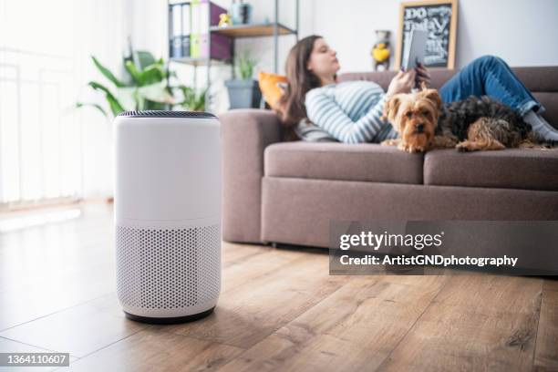

Ventilation
Ventilation plays a very imoprtiant factor in air quality. Proper air circulation is key to a healthy home, we take in oxygen and expel carbon dioxide. living in an airtight home would feel stuffy and it would become harder to breath over time.there are a few methods to consider when ventilating the home. Below is a list of some things you can do to help circulate the air in your home;
- Open a window
- install and utilize a ceiling fan
- Box and Oscilating Fan Types
this is the easiest to do and offers good ventilation based on the degree of openness of the window.
this is a quality way to ensure proper circulation year round by mixing the air and creating a more stabilized overall ambient temperature and humidity.
These help circulate the air from room to room and can elimiate dead zones throughout the house creating stable ambient temperature and humidity.
air filters
Humidity
Humidity plays a vital role in the overall respiratory systems of all living creatures that feature a respiratory system to breathe on the planet. For us humans, 30% relative humidity is a good optimal baseline. any significant numbers deviating above or below this will pose health risks. In the winter when the outside temperatre drops below zero, any humidity in the air freezes to cold surfaces, effectively sucking the moisture out of the air. A byproduct of most heating systems is its dependancy on utilizing inside air for combustion, therefore creating a vacuum inside the house, intaking the dry outside air and dropping indoor relitive humidity to well below 30%. There are many ways around this, including but not limited to;
- Getting a stand alone humidifier
- Pot of water on the woodstove if applicable If you have a woodstove, you can place a pot on top of the woodstove that would be suitable to contain 3 liters of water for overnight humidity remidiation.
- Byproduct Remidiation
These are great at combatting low RH by evaporating water directly back into the air
If there are a lot of people living in the home who shower often and cook a lot of pasta, there shouldn't be any further action required.
Filtration
Quality air filtration is also key to healthy air in the home. a good air filter will combat the dust that accumulates over time. they are good at taking out the fine particles, viruses, mites, fine hair and odors. likening to how it is importiant to drink clean filtered water, it is also good practice to breath clean filtered air. the overall long term health benefits of breathing filtered air are very good. below is a list of methods to filter air in your home;
- Consumer air filters
- Utilize the "Circulation" feature in applicable furnaces
- Home built air filter
These can clean the air good enough if the model is engineered properly, there are alot of questionable engineering methods utilized in consumer air filters in this day and age. It is good to do research before making a selection. A link to Canadian Tires website can be found here. You can find and research air purifiers on their website.
In most modern furnaces, they have a setting called Circulation, in which the motor turns at a much slower rate than standard heating or cooling when not engaged in either heating or cooling. Its purpose is to circulate the air in a non disturbing way, thereby cleaning the air continuously. It is recommended to utilize good filters and change them regularly.
This is what I utilize in my home. its a walmart box fan with two of the highest quality 25x20 furnace filters that I could find duct taped in a "V" configuration with the fan blowing out, pulling the air through the filters. i find it moves much more volume of air that even the biggest consumer air filters. the hepa furnace filters capture pretty much everything.